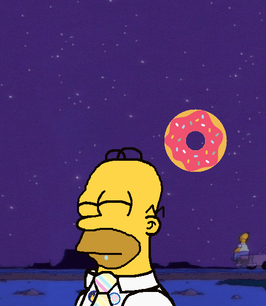

Homer Simpson
This is my wonderful ghost that I put lots of time and effort into! It features the character Homer Simpson from The Simpsons!
In this ghost, you meet Homer at the Springfield Nuclear Power Plant, where he talks about random stuff to pass the time at work. You can feed Homer donuts by double-clicking his mouth, and pet his head by moving your mouse or scrolling the mouse wheel over it. But don't double-click his top strands of hair or his eyes...
Homer has soundbites! They're off by default, but I highly recommend toggling 'em on by going to the Config Menu for the full experience. You can also change the volume of the soundbites there, and the talk rate as well.
Homer will also give you ideas to combat boredom if you double-click (or scroll the mouse wheel) on him to use his menu, and ask you questions, and you can hug him from the menu. You can also tell him to sleep, although if you don't, he will sleep anyway after saying a certain random dialogue. You can wake him up by hugging him, saying you're bored, playing minigames with him, or letting him ask you a question.
Homer has a music player! You can drag music files (mp3, wav, midi, etc., and you can install LAV-Filters to support more formats) onto him and boop (double-click) his nose to make him play the music. You can access the music player directly through the main menu to change its settings. Double-click on his shoulder to stop the music, and double-click on his ear to pause and resume the music. Soundbites work fine with music playing.
If you double-click the donut, you'll find minigames: Word Search, Word Jumble, and Hangman. There is also a continuous petting minigame, so you may be able to find out how long you can pet Homer.
Hope you enjoy!
He gets your name, pronouns, and birthday from SSP Preferences. He uses my Sky Balloon!
Other cool ghosts of mine are Pinkie Pie and Rainbow Dash, The Narrator, ButtonToy, Galaxy Buterfly, and Reassurance Bucket!
Donut icons created by Sea.icon - Flaticon
Preview GIFs:


What's an Ukagaka/ghost?
An Ukagaka, or ghost, is a character that hangs out on your desktop! They can do little tasks for you such as emptying your recycling bin, checking for new emails, or checking the weather. Mostly they'll just keep you company and say random dialogue.
Ghosts are very diverse, some have a strong focus on story and discovering information, while others are full of interesting functions or games. Check out this video to learn more!
How to install a ghost
To use a ghost, you'll need a program to run it in. If you're on Windows, you can use SSP. If you're not on a Windows computer there are some options available, but you'll have to play around and see what works for you.
Mac: Ukagaka on Macs, NiseRingo, PlayonMac+SSP, WineBottler
Linux: NINIX-AYA
For me (OdieDogXP), SSP works almost perfectly on my Arch Linux installation with Wine, with the only caveats being that installing ghosts basically doesn't work unless the file doesn't look like this on the inside, or is a simple zip file, and that ghosts only play sound if it's an MP3 file, even with LAV Filters installed.
For those using SSP, go ahead and download the complete install package from the website. When you run it a catgirl named Emily should appear and say something in japanese. Drag and drop the .nar file you downloaded for this ghost on her, and she should install them for you. Once she's done, right click her, hover over 'change ghost', and select the appropriate ghost!
If you get an error window like this when you start SSP, it probably can't find any ghosts to run. You can try dropping the .nar file for the ghost you want to install onto that window. If that doesn't work, click the first button and point it towards your ghost directory (it should be \SSP\ghost).
If the right click menu is in Japanese, the language option is the 4th one up from the bottom. Select English and it should change immediately. If it doesn't, try restarting SSP.
If the catgirl will not install any ghosts for you, you can unzip the .nar file and drag the contents into the \SSP\ghost folder. Your unzipped folder should have subfolders called 'ghost' and 'shell' on the top level, if it doesn't you'll have to move all the ghost's files up one level. Once that's done, restart SSP and look in the right click menu again, and they should be in your list of ghosts.
Instructions on how to use each ghost are in their readmes, which should automatically pop up when you install them! If it doesn't appear, you can see it by opening them, right clicking on them, and going to Information>Read me.
The right click menu is how you do things like change ghosts or call more of them at once, how you change the size of the ghost/balloon, and how you access the preferences menu to do things like make the ghost always stay on top of other windows. If you're wanting to tweak something about SSP, you'll likely find it there!
👻 Member of the Ukagaka/Ghost Development and Download webring 👻
👻
Random 👻